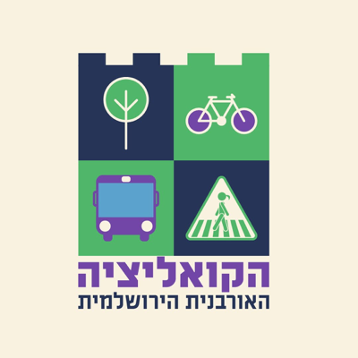
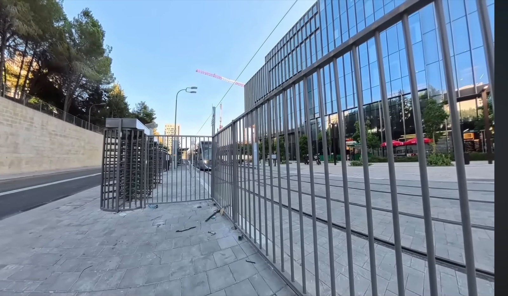
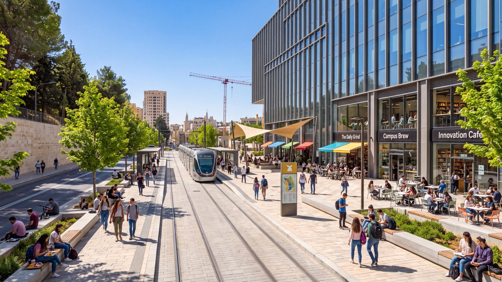
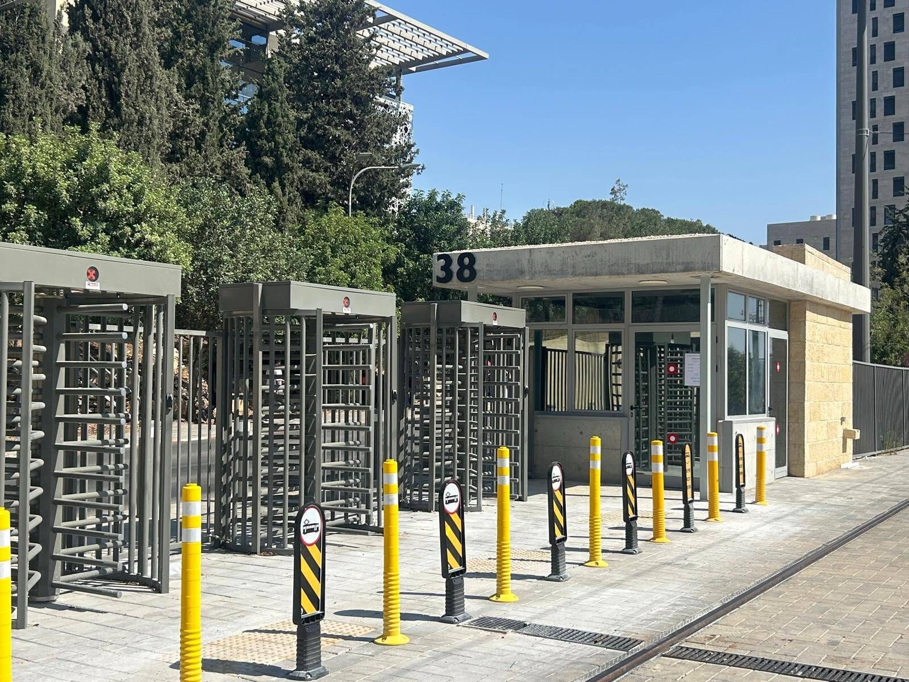

קמפיין אזרחי · גבעת רם · האוניברסיטה העברית
ככה לא מחברים את הקמפוס
לעיר ולמסחר.
די לקיבו״ט.
הקו הירוק של הרכבת הקלה מגיע לקמפוס. איתו מגיעה תוכנית לגדרות חדשות שתחתוך את הקמפוס מהעיר שסביבו, תסגור תחנות להרמטיות ותוציא בניינים שלמים אל "מעבר לגדר". זו לא גזירת שמיים. יש דרכים אחרות.
רקע
קמפוס שנבנה פתוח, ונסגר בהדרגה
גבעת רם נבנה בשנות ה-50 וה-60 כקמפוס אוניברסיטאי מודרניסטי — מרחב פתוח שהיה חלק מהעיר שסביבו. מאז שנות ה-80 הוא עובר תהליך הדרגתי של גידור: שכבה אחת של ביטחון על גבי השנייה, עד שהכניסה לחלקים ממנו מזכירה יותר מתחם מאובטח מאשר קמפוס אקדמי פתוח.
ועכשיו מגיעה שכבה נוספת: תוואי הקו הירוק של הרכבת הקלה עובר בתוך הקמפוס, ולפי התכנון הנוכחי הוא מחייב גדר ביטחון משלו — סביב המסילה, סביב התחנות, ולמעשה סביב מבנים שלמים כמו קמפוס ההייטק "פארק העברית" והאקדמיה למוסיקה, שיימצאו מהצד ה"חוץ" של הגדר.

הקריאה לפתיחת הקמפוס מגובה גם בעמדת הקואליציה האורבנית הירושלמית, שמציעה להקים צוות משימה משותף — אוניברסיטה, עיריה, נת"ע וגורמי ביטחון — לתוכנית מדורגת לפתיחת הקמפוס, עם אמצעי אבטחה חלופיים כמו נעילה אלקטרונית של מבנים בודדים במקום גידור שטח שלם.
שתי אפשרויות
איזה מרחב אתם רוצים בגבעת רם?

סורגים, סבסבות ומחסומים בין הרציף לקמפוס. הרכבת מגיעה — אבל הקמפוס נשאר נעול.

אותה רכבת, אותה תחנה — אבל רחוב פתוח, בתי קפה, מקום לשבת. הביטחון קיים, רק לא בצורת סורגים.
הבעיה
גדר אחת קטנה. תוצאה ענקית.
ניתוק שכונות מהקמפוס
בית הכרם ונאות בהמשך התוכנית מתרחקות עוד יותר מהקמפוס שלכאורה משרת אותן. גדר נוספת = עוד קילומטר הליכה, עוד סיבה לא לחצות.
תחנות רכבת כמתחמים סגורים
לפי התכנון, תחנות שאמורות לשרת את כל הציבור יהפכו בפועל למתחמים הרמטיים בתוך גדרות ביטחון — לא מרחב ציבורי, אלא עוד שכבת בקרה.
בניינים שלמים "בחוץ"
קמפוס ההייטק "פארק העברית" והאקדמיה למוסיקה עשויים למצוא את עצמם מהצד הלא-נכון של הגדר החדשה — מנותקים פיזית מהקמפוס שהם חלק ממנו.
תקדים לכל הקו
מה שקורה בגבעת רם לא נשאר בגבעת רם. אם התקן הזה — "מסילה = גדר" — יתקבע כאן, הוא יחזור בכל תחנה אחרת של הקו הירוק שעוברת דרך שטח פתוח.

בלי לצבוע את זה בשחור-לבן
כן, לביטחון יש מקום. השאלה היא איזה.
אנחנו לא טוענים שלרשויות אין שום שיקול סביר. תחנת רכבת קלה היא תשתית קריטית, ולמערכת הביטחון יש בהחלט אינטרס לגיטימי לשלוט על גישה למסילה ולתחנות. אנחנו לא מזלזלים בזה.
אבל "ביטחון" הוא לא נימוק שסוגר את הדיון — הוא נקודת פתיחה לשאלה איך. יש הבדל גדול בין אבטחת תשתית קריטית (המסילה, מערכות החשמל, חדרי הבקרה) לבין גידור של רחוב שלם, כניסה של קמפוס וכל מה שביניהם רק כי זה "יותר קל" תכנונית. בעולם קיימים לא מעט פתרונות — מבקרת גישה ממוקדת ועד עיצוב עירוני שמונע גישה בלי סורגים — שמשיגים את אותה תוצאת ביטחון בלי לקטוע רחוב.
מה אפשר לעשות אחרת
חלופות שכבר קיימות בעולם — ולא הומצאו כאן
-
בקרת גישה ממוקדת, לא גידור שטח
לאבטח את התחנה ואת תשתית המסילה עצמה בלבד — מצלמות, תאורה, נוכחות אבטחה — ולא את כל הרחוב שמסביב.
-
תכנון עירוני שמבדיל בלי לחסום
הבדלים ברמת המדרכה, ריהוט רחוב, שינויי חומר — כלים שמשמשים בעולם להנחות תנועה בלי סורג פיזי אחד.
-
נעילה אלקטרונית של מבנים, לא גידור שטח
הצעת הקואליציה האורבנית הירושלמית: לאבטח מבנים בודדים באמצעי נעילה ובקרת גישה אלקטרונית, ולא לגדר רחוב שלם כדי להגן על כניסה לבניין אחד.
-
צוות משימה משותף, לפני שהברזל מותקן
להקים צוות משימה משותף — האוניברסיטה, עיריית ירושלים, נת"ע וגורמי ביטחון — לתוכנית מדורגת לפתיחת הקמפוס, ולבחון את תוואי הגדר המדויק לפני שהוא הופך לעובדה מוגמרת בשטח.
-
רשת הליכה רציפה בין הקמפוס לעיר
פתיחה מבוקרת יכולה לחבר בין רשתות הליכה, לשפר את איכות ההליכה בסביבה, להפחית תלות ברכב פרטי — ולשלב את הקמפוס במרקם העירוני כמרחב ציבורי, לא כמובלעת.
-
שקיפות תכנונית
לפרסם את תוכניות הגידור המלאות לציבור, כולל המפות המדויקות — כרגע הרבה מהמידע מגיע משמועות ומתצפית בשטח, לא ממסמך תכנון פתוח.
שאלות ותשובות
מה שרציתם לשאול
מה בעצם התוכנית שמדברים עליה?
בעקבות בניית הקו הירוק של הרכבת הקלה, שעובר בתוך שטח קמפוס גבעת רם, מתוכננת גדר ביטחון נוספת סביב המסילה והתחנות. בפועל, הגדר הזו לא נשארת "צמודה למסילה" — היא חותכת חלקים מהקמפוס, כולל מבנים שלמים, ומוציאה אותם מהמרחב הפתוח של האוניברסיטה.
למה זה בעיה, אם בכל מקרה יש כבר גדרות בקמפוס?
כי כל שכבת גידור נוספת מצטברת על הקודמות. קמפוס שכבר מבודד מהעיר שסביבו, בעקבות עשרות שנים של תוספות ביטחון, מקבל עוד שכבה — הפעם כזו שמנתקת גם בין חלקי הקמפוס עצמו לבין עצמם, ולא רק בין הקמפוס לרחוב.
מי בעיקר נפגע מזה?
סטודנטים וסגל שצריכים לעקוף מרחקים גדולים יותר בין מבנים; תושבי בית הכרם ונאות שהקמפוס אמור לחבר אליהם ולא להתנתק מהם; וכל מי שמשתמש בתחנת הרכבת הקלה כשער כניסה טבעי לעיר האוניברסיטאית — ומוצא אותו נעול.
האם יש שיקולי ביטחון אמיתיים מאחורי זה?
כנראה שכן, בסבירות גבוהה — ואנחנו לא מתעלמים מזה. השאלה שאנחנו מעלים היא לא "אבטחה כן או לא", אלא "איזו רמת גידור נדרשת בפועל, ואיפה עובר הגבול בין אבטחת תשתית קריטית לבין גידור-יתר של רחוב שלם".
מה אנחנו בעצם מבקשים?
שקיפות מלאה בתוכניות הגידור, בדיקה מחודשת של התוואי המדויק לפני ביצוע, ושיתוף בעלי העניין — האוניברסיטה, העירייה, נת"ע והשכונות הסמוכות — בקבלת ההחלטה. לא "לבטל ביטחון", אלא לעצב אותו נכון.
איך אפשר לעזור?
הצטרפו לקבוצת הווטסאפ שמתעדכנת בהתפתחויות, שתפו את העמוד הזה, ואם אתם תושבי ירושלים — פנו לראש העירייה ולחברי המועצה. פרטים בהמשך העמוד. 👇
חתמו
עצומה: לא לגדר את גבעת רם
אנחנו קוראים לעיריית ירושלים, לאוניברסיטה העברית ולנת"ע להקים צוות משימה משותף ולבחון חלופות לגידור לפני שהתוואי מבוצע בשטח.
תודה שחתמתם! 🙌 שתפו את הדף עם עוד אנשים — כל חתימה מקרבת שולחן עגול.
עוד דרכים לפעול
הגדר עדיין לא סופית. אתם יכולים להשפיע.
התוכניות עדיין בשלבי דיון. ככל שיותר אנשים ידעו וידברו על זה — יש יותר סיכוי שהתוואי יבחן מחדש.